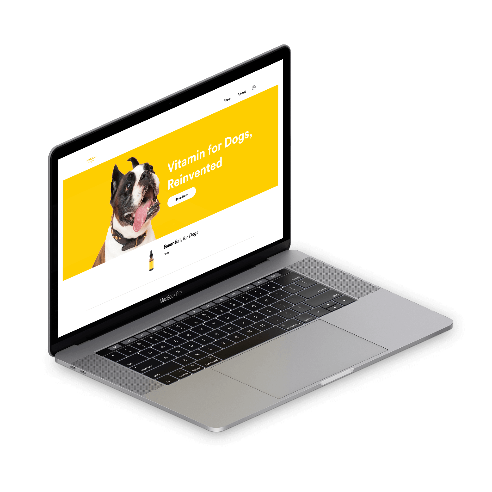
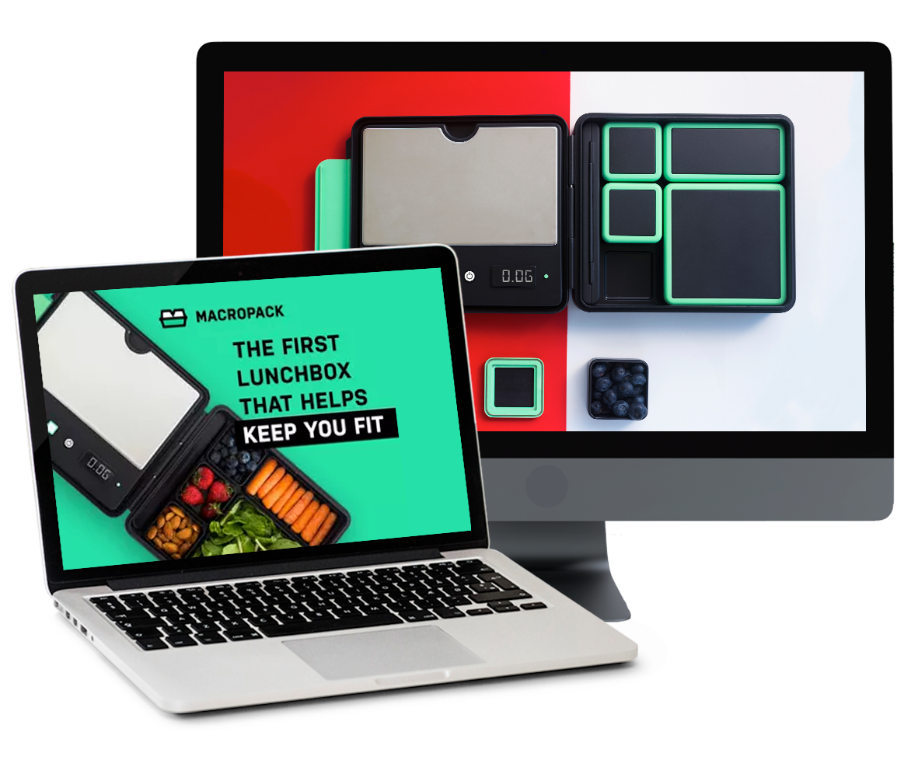

Created the brand and design for Lookout Charger which is a startup that was funded through a Indiegogo campaign. I designed the assets and layout for their campaign, as well designed their logo and website assets. Their campaign was successfully funded in 24 hours and have raised over $100,000 from this campaign.
Doggo drops is a vitamin nutrient drop that helps better the health of dogs. I'm leading branding and design of web and as well the physical tincture bottle product. Also, helping front-end implementation of my designs working beside a web developer. Working within a small team and the only designer on this project.
One of my most recent clients in which I aided with the design direction and branding of this startup. Responsible for the logo, color scheme, graphic content, visual aids, and content. Worked on optimizing the user experience for certain campaigns. This was a short-term project as this was all completed within a span of three weeks in order to meet launch deadlines.